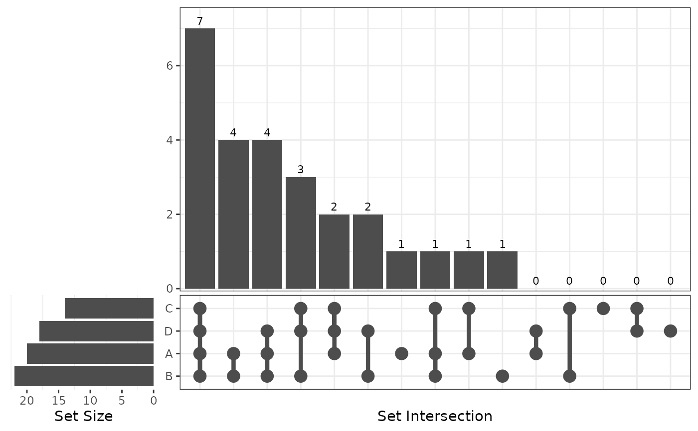
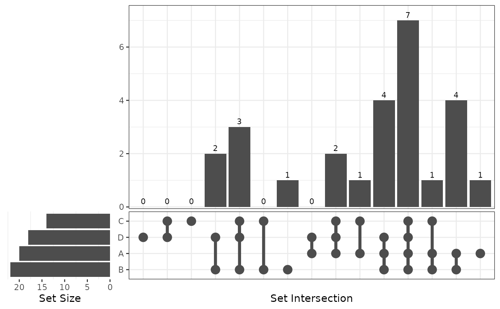

This function generate a upset plot by creating a composite plot which contains subplots generated by ggplot2.
plot_upset(
venn,
nintersects = NULL,
order.intersect.by = c("size", "name", "none"),
order.set.by = c("size", "name", "none"),
relative_height = 3,
relative_width = 0.3,
...
)
Arguments
- venn
a class Venn object
- nintersects
number of intersects. If NULL, all intersections will show.
- order.intersect.by
'size', 'name', or "none"
- order.set.by
'size', 'name', or "none"
- relative_height
the relative height of top panel in upset plot
- relative_width
the relative width of left panel in upset plot
- ...
useless
Examples
list = list(A = sample(LETTERS, 20),
B = sample(LETTERS, 22),
C = sample(LETTERS, 14),
D = sample(LETTERS, 30, replace = TRUE))
venn = Venn(list)
plot_upset(venn)

plot_upset(venn, order.intersect.by = "name")

plot_upset(venn, nintersects = 6)